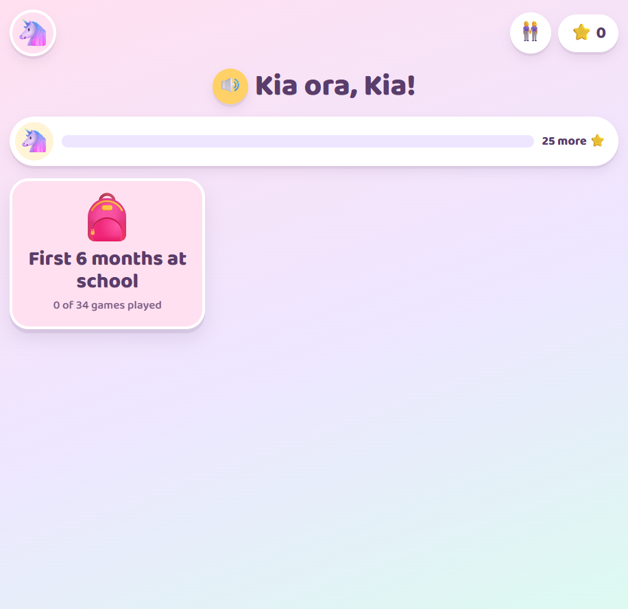
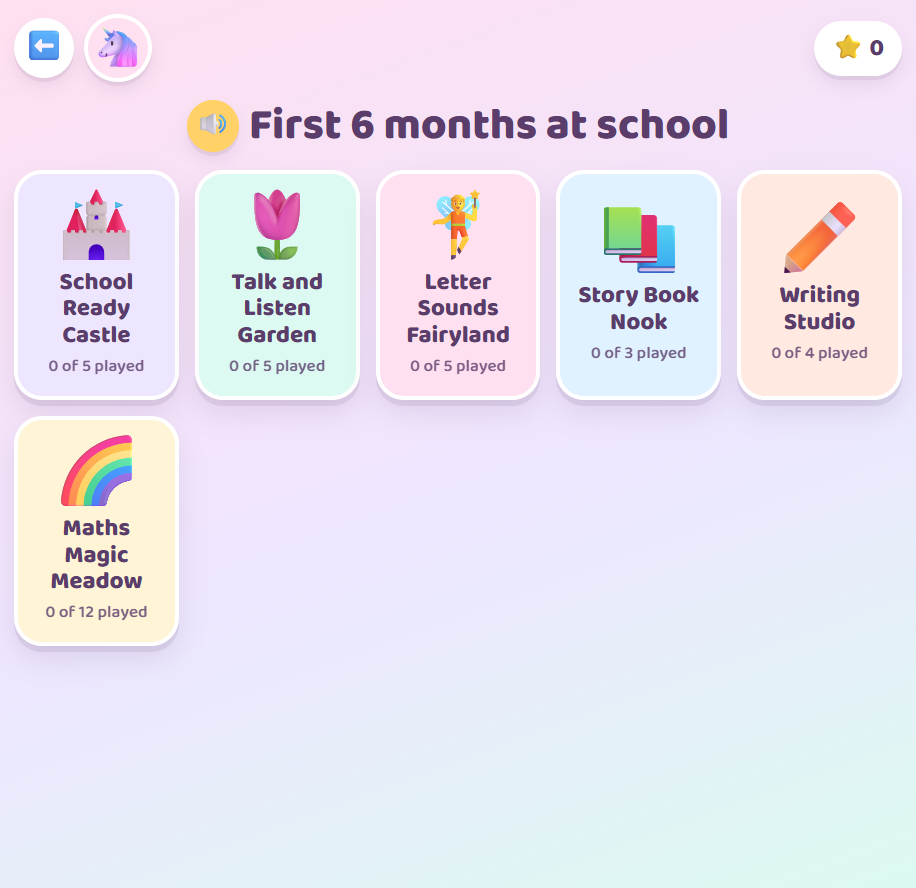
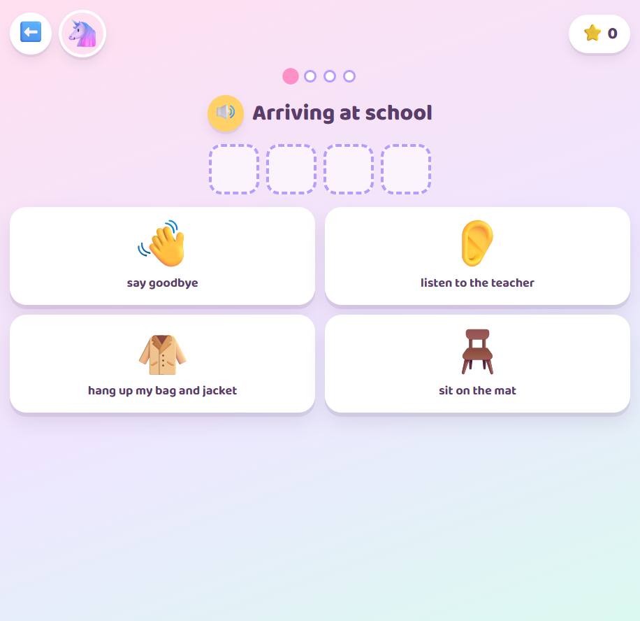
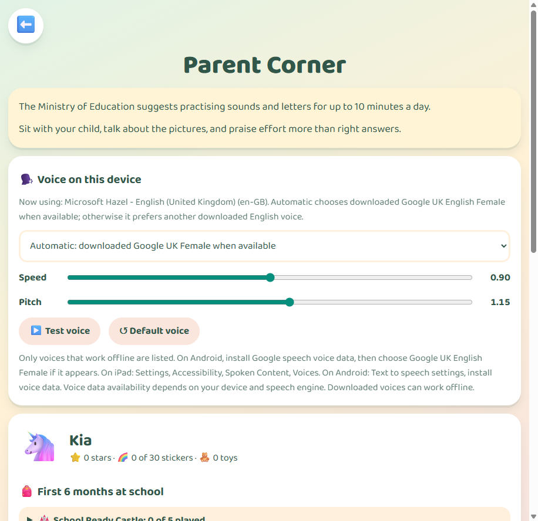

About Little Kauri
Little Kauri is a playful learning game for children getting ready to start school. Made for families, its activities draw on the New Zealand Ministry of Education guide for a child's first six months at school.
See Little Kauri in play




Six worlds to explore
School Ready Castle practises school routines, getting ready, asking for help, kindness, and everyday te reo Māori words.
Talk and Listen Garden builds listening, understanding, following instructions, naming feelings, and sharing ideas.
Letter Sounds Fairyland introduces letter sounds, phonics, first sounds, matching, and letter formation.
Story Book Nook explores sounding out words, sight words, read-along stories, and comprehension.
Writing Studio offers letter and number tracing, name writing, and word building.
Maths Magic Meadow covers counting, number order, early addition and subtraction, shapes, patterns, and measurement.
Play, practise, and celebrate
Children earn stars for activities, collect stickers, and work towards toys and a crown for completing a world. Each player can choose a name, colour theme, character, and wished-for toys.
Made for little learners and their grown ups
Spoken instructions use voices available on the device, and letter sounds are included in the app. In Parent Corner, a grown up can review progress, manage players, reset progress, and adjust the voice and phonics settings.
Private and ready to play offline
Player profiles and progress are stored on the device. Little Kauri has no accounts, advertisements, analytics, or tracking. The web app can work offline after its files have been loaded.